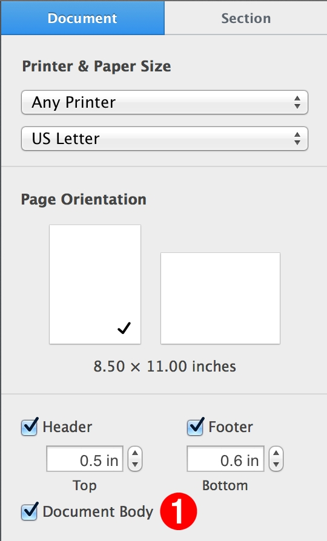

A section is a collection of contiguous pages within a document that its main text flow enabled (sometimes referred to as being in “word-processing mode”). When a document’s body text is enabled, the document body checkbox, located in the Document Tab of the Document Pane in the document window, will be selected. 1Functionally, sections act as wrappers for pages, providing a means of identifying the pages for access and manipulation. Although pages can be added to sections using the make verb, it is better to rely upon the built-in auto-flow mechanism of Pages to add pages as needed.
Here is the dictionary excerpt for the section class:
The Section Class
section n : A collection of contiguous pages comprising a section within a document.
elements
contains audio clips, charts, groups, images, iWork items, lines, movies, pages, shapes, tables, text items; contained by document.
properties
body text (text ) : The section body text.
Script Examples
DO THIS ►For use with the examples scripts, DOWNLOAD a ZIP archive of a Pages document containing the text of Alice in Wonderland, with each chapter as its own section.
(A special “thank you” to Project Gutenberg for making this content available to the public!)
Here’s a simple script showing the relationship between sections and pages:
Because body text is a property of a document, of a section, and of a page, it can used to target specific parts of a document, such as a specific section, a specific page, and even a specific paragraph: